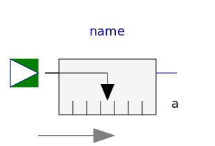
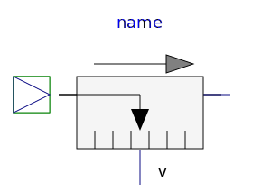
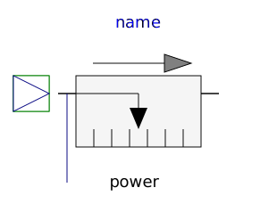
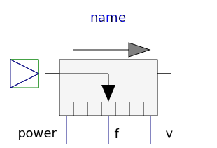

This package contains ideal sensor components that provide the connector variables as signals for further processing with the Modelica.Blocks library.
| Name | Description |
|---|---|
| Ideal sensor to measure the absolute position | |
| SpeedSensor | Ideal sensor to measure the absolute velocity |
|  AccSensor | Ideal sensor to measure the absolute acceleration |
| Ideal sensor to measure the relative position | |
|  RelSpeedSensor | Ideal sensor to measure the relative speed |
| RelAccSensor | Ideal sensor to measure the relative acceleration |
| Ideal sensor to measure the force between two flanges | |
|  PowerSensor | Ideal sensor to measure the power between two flanges (= flange_a.f*der(flange_a.s)) |
|  MultiSensor | Ideal sensor to measure the absolute velocity, force and power between two flanges |